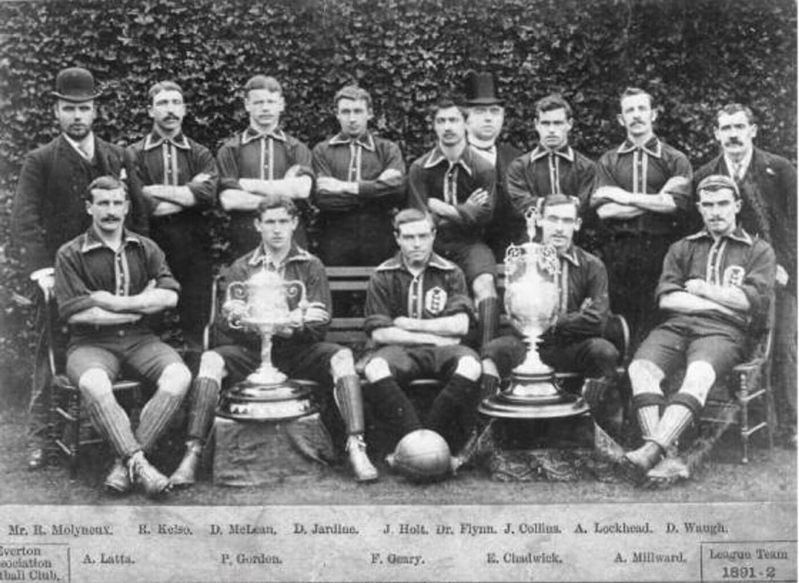

Originally, The “Football League” was founded in 1888 in Manchester including of 12 founding teams. Those teams were Accrington, Aston Villa, Blackburn Rovers, Bolton Wanderers, Burnley, Derby County, Everton, Notts County, Preston North End, Stoke, West Bromwich Albion, and Wolverhampton Wanderers. In 1992, the league officially switched from “Football League", to “FA Premier League” Since the switch to the Premier League, 51 different teams have competed. Out of these teams, only 7 have won the title. Manchester United(13), Manchester City(8), Chelsea(5), Arsenal(3), Liverpool(2), Balckburn Rovers(1), and Leicester City(1).

| Club | Points Earned | Year |
|---|---|---|
| Liverpool | 84 | 2024/2025 |
| Manchester City | 91 | 2023/2024 |
| Manchester City | 89 | 2022/2023 |
| Manchester City | 93 | 2021/2022 |
| Manchester City | 86 | 2021/2022 |
| Liverpool | 99 | 2019/2020 |
| Manchester City | 98 | 2018/2019 |
| Manchester City | 98 | 2017/2018 |
| Chelsea | 93 | 2016/2017 |
| Leicester City | 81 | 2015/2016 |
| Chelsea | 87 | 2014/2015 |
| Manchester City | 86 | 2013/2014 |
| Manchester United | 89 | 2012/2033 |
| Manchester City | 89 | 2011/2012 |
| Manchester United | 80 | 2010/2011 |